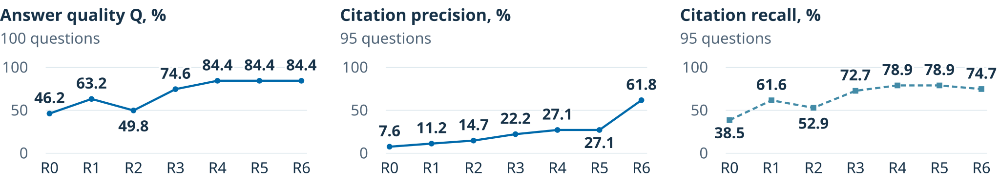
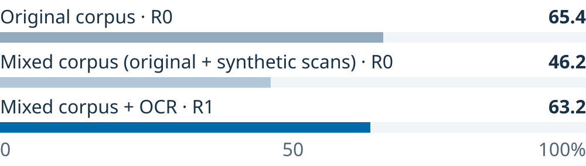

Building Legal RAG:
what each component contributes
Context and hypothesis
Retrieval-augmented generation (RAG) grounds language-model answers in external documents [1]. Legal QA needs correct answers and precise, complete source-page citations [2, 3]. PDFs may lack searchable text; evidence spans different text scales and may require exact legal terms. Retrieving more passages can also introduce irrelevant pages.
How can a legal RAG pipeline improve answer quality
while keeping source-page citations both precise and complete?
H1 · Retrieval
Multiple text scales, hybrid search and reranking will improve answers and evidence retrieval over R0.
H2 · Scan robustness
Recovering text from scanned documents will reduce the performance loss caused by the missing text layer.
H3 · Citation selection
Selecting pages after answer generation will improve citation precision while retaining most of the relevant evidence.
Methodology
Data: 30 DIFC legal PDFs (590 pages), 100 questions: 70 structured-answer and 30 free-text. Reference source pages are available for 95 questions. In the mixed corpus, 10 PDFs (107 pages) become synthetic scans: page images at 300 DPI with the text layer removed.
R0 · Baseline
PDF text300-token passages
Semantic retrievalQwen3-Embedding-0.6B
Generate answerGPT-5.4-mini
Answer + retrieved pagesAll context pages as citations
R1 · OCR
Recover text from scanned pages
PP-OCRv5
R2 · Multiple
text scales
Represent evidence at multiple levels
Pages, sections, clauses, microchunks, tables
R3 · Lexical
retrieval
Combine semantic and exact-term search
BM25 + RRF
with semantic retrieval
R4 · Neural
reranking
Prioritize the most relevant evidence
Qwen3-
Reranker-0.6B
R5 · Answer
type checks
Normalize and validate the answer type
Normalization, validation and confidence checks
R6 · Citation
selection
Select pages from supporting chunks
Supporting-chunk references + page validation
Each variant (R1–R6) includes all previous additions.
Answer generation: A fixed GPT-5.4-mini configuration is used across variants, so changes in performance reflect modifications to the surrounding pipeline rather than a change of the generating LLM.
Answer quality
Is the generated answer correct?
Q = 0.7 × structured score
+ 0.3 × free-text score
Citation precision
Are the cited pages actually relevant?
Share of cited pages that support the answer.
Citation recall
Did the system cite all required evidence?
Share of annotated supporting pages that were cited.
Results
R0 to R6 on the mixed corpus
OCR recovers performance on scanned documents

Converting 10 documents into synthetic scans reduces answer quality from 65.4% to 46.2%. OCR restores most of this loss, reaching 63.2%.
Hypothesis evaluation
H1 · Partially supported. Multiple scales alone reduce Q; lexical retrieval and reranking improve Q and recall.
H2 · Supported. OCR restores most of the loss caused by removing the text layer.
H3 · Supported with a trade-off. Precision rises from 27.1% to 61.8%; recall falls from 78.9% to 74.7% (−4.2 pp).
Limitations
one DIFC corpus and 100 questions; one run per condition with no significance testing; LLM-based evaluation of free-text answers.
Conclusion
Legal RAG should be designed as a multi-stage pipeline: OCR improves robustness to unreadable PDFs, hybrid retrieval and reranking improve answer quality, and post-answer citation selection improves citation precision. However, citation selection introduces a precision–recall trade-off, so answer quality and citation quality should be optimized and evaluated separately.